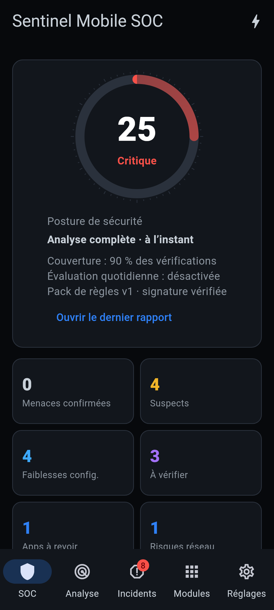

SENTINEL · MOBILE SOC
Installer l'application sur iPhone
Guide pas à pas pour les testeurs de la version bêta — gratuit, environ 10 minutes.
L'application n'est pas encore publiée sur l'App Store. Pendant la bêta, vous l'installez à partir du fichier SentinelSOC-ios-unsigned.ipa, signé avec votre propre identifiant Apple (gratuit).
Ce qu'il vous faut
iPhone sous iOS 15 ou plus récent
Ordinateur Windows ou Mac
Câble USB de l'iPhone
Identifiant Apple (gratuit)
Le fichier SentinelSOC-ios-unsigned.ipa
Connexion Internet
À savoir : avec un identifiant Apple gratuit, l'application fonctionne 7 jours, puis doit être ré‑signée (2 minutes, voir « Renouveler tous les 7 jours »). Vos données dans l'application sont conservées.
Méthode 1 — Sideloadly RECOMMANDÉE
A. Préparer l'ordinateur
- Windows : installez iTunes et iCloud depuis le site d'Apple (versions « hors Microsoft Store »), puis Sideloadly depuis sideloadly.io.
- Mac : installez Sideloadly depuis sideloadly.io.
B. Installer l'application
- Branchez l'iPhone à l'ordinateur et déverrouillez‑le. Si la question apparaît, touchez « Faire confiance » et saisissez le code de l'iPhone.
- Ouvrez Sideloadly : votre iPhone apparaît dans la liste des appareils.
- Glissez le fichier
SentinelSOC-ios-unsigned.ipa dans la fenêtre de Sideloadly.
- Saisissez votre identifiant Apple, puis cliquez sur Start.
- Entrez votre mot de passe Apple et, si demandé, le code de validation reçu sur vos appareils.
- Attendez le message « Done » (environ 1 minute). L'icône Sentinel SOC apparaît sur l'iPhone.
C. Autoriser l'application sur l'iPhone
- Activer le mode développeur (iOS 16 et plus récent) :
Réglages → Confidentialité et sécurité → Mode développeur
Activez‑le, redémarrez l'iPhone, puis confirmez « Activer » au redémarrage.
- Faire confiance au développeur :
Réglages → Général → VPN et gestion de l'appareil
Touchez votre identifiant Apple, puis « Faire confiance ».
- Ouvrez Sentinel SOC depuis l'écran d'accueil. ✅
Autres méthodes
Méthode 2 — AltStore
Renouvelle l'application automatiquement par Wi‑Fi.
- Installez AltServer (altstore.io) sur l'ordinateur.
- iPhone branché : icône AltServer → Install AltStore.
- Faites confiance au profil (étape C.2).
- Transférez le
.ipa sur l'iPhone (AirDrop ou Fichiers).
- AltStore → Mes apps → + → choisissez le fichier.
Méthode 3 — Xcode (Mac, développeurs)
git clone https://github.com/LUNATIC92I/Secure- Dans
app : flutter pub get
- Ouvrez
ios/Runner.xcworkspace dans Xcode.
- Runner → Signing & Capabilities : choisissez votre équipe.
- Sélectionnez l'iPhone, puis ▶ Run.
Renouveler tous les 7 jours
Quand l'application ne s'ouvre plus, refaites simplement l'étape B avec le même fichier, ou touchez Actualiser dans AltStore. Inutile de désinstaller : vos résultats et incidents sont conservés.
Problèmes fréquents
| Message ou symptôme | Solution |
|---|
| « Développeur non approuvé » | Réglages → Général → VPN et gestion de l'appareil → Faire confiance |
| L'application se ferme immédiatement | Activez le Mode développeur, puis redémarrez l'iPhone |
| « Maximum number of apps » | Un identifiant gratuit est limité à 3 applications installées ainsi : supprimez‑en une |
| Sideloadly ne voit pas l'iPhone | Sous Windows, installez iTunes (version du site Apple), rebranchez l'iPhone et touchez « Faire confiance » |
| Erreur de connexion à l'identifiant | Saisissez le code de validation à deux facteurs ; sinon essayez un identifiant Apple secondaire |
| L'application ne s'ouvre plus après une semaine | Normal avec un compte gratuit : ré‑signez‑la (étape B) |
Ce que Sentinel vérifie sur iPhone
iOS isole chaque application : aucune app de l'App Store ne peut lister ou analyser les autres apps installées. Sur iPhone, Sentinel vérifie :
- Code de verrouillage et version d'iOS
- Indicateurs de jailbreak
- VPN et proxy actifs
- Liens d'hameçonnage (copier‑coller ou
sentinel://scan?url=…)
- Traceurs Bluetooth Tile, SmartTag et réseau Localiser (les AirTags sont signalés par iOS lui‑même)
- Incidents et rapports exportables
- Guidage vers Contrôle de sécurité, Rapport de confidentialité et profils de gestion
Sécurité
- Téléchargez le fichier
.ipa uniquement depuis le lien officiel du projet.
- Méfiez‑vous des sites proposant d'installer des applications « sans ordinateur » avec des certificats d'entreprise : c'est un vecteur connu de malwares.
- Sentinel ne demande jamais vos contacts, SMS, appels ni l'accès au micro, et n'envoie aucune donnée sans votre accord.